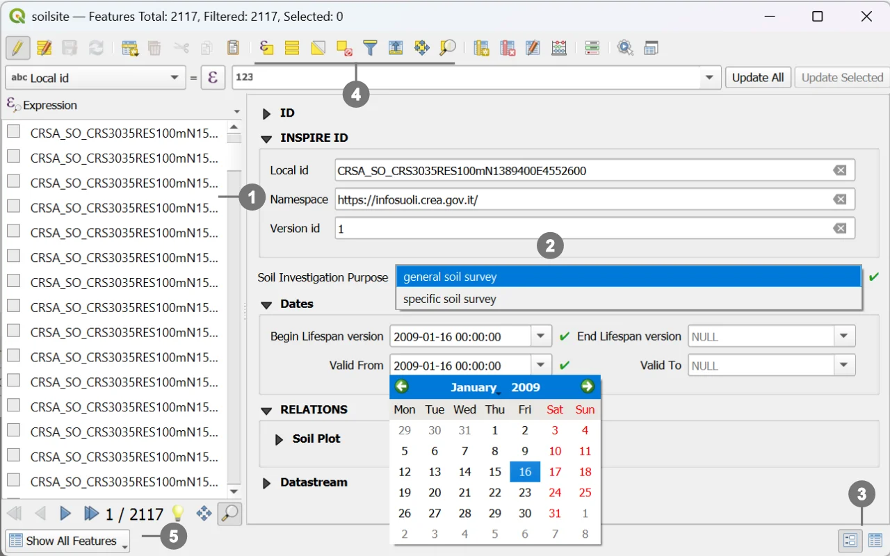
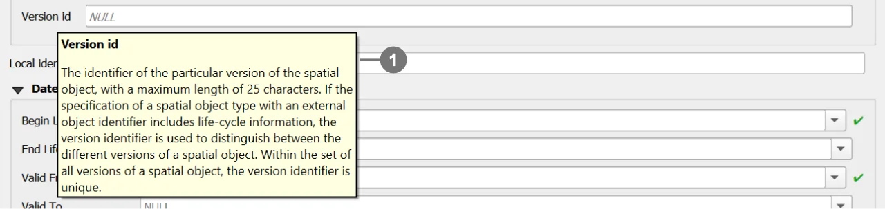

In QGIS, customized attribute forms allow full control over the layout and behavior of the user interface used for viewing, inserting, and editing attribute data.
Instead of relying on automatically generated forms, a clearer and more structured layout has been defined, enabling precise control over which fields are displayed, how they are grouped, and under which conditions they are visible.
Each field has been associated with a specific widget, i.e., a control designed to facilitate data entry and reduce user errors.
The main widget types used include:
Text Edit– free‑text inputCheckbox– boolean valuesDate/Time– date and time selectionValue Map / Value Relation – predefined lists of values (fixed or derived from another table)Relation Reference / Relation Editor– handling one‑to‑many or many‑to‑many table relationshipsHTML / Text / Spacer– support elements for notes, layout structure, or separatorsThese widgets allow the form to guide the user and enforce the data‑entry rules defined in the underlying data model.
Important
When the Relation Reference widget contains a large number of entries, it is possible to quickly filter the list by typing one or more letters into the text input field. The list is automatically filtered in real time based on the entered characters, allowing faster and easier selection of the desired item.
Customized forms are used to:
Important
The goal is to provide a functional interface, more efficient and clearer than the default one, particularly suitable for complex datasets.

The attribute toolbar provides two main viewing modes ③:
Form View Displays the attribute form for a single record at a time.
Table View Shows the attributes in tabular mode, useful for multi-record inspection and quick selection operations.
Selection tools ④ ⑤ determine which records can be opened or edited through the form.
Note
Selection is an essential part of the editing workflow, as it controls which records are loaded into the form.

Tip
For more details, refer to the official QGIS documentation